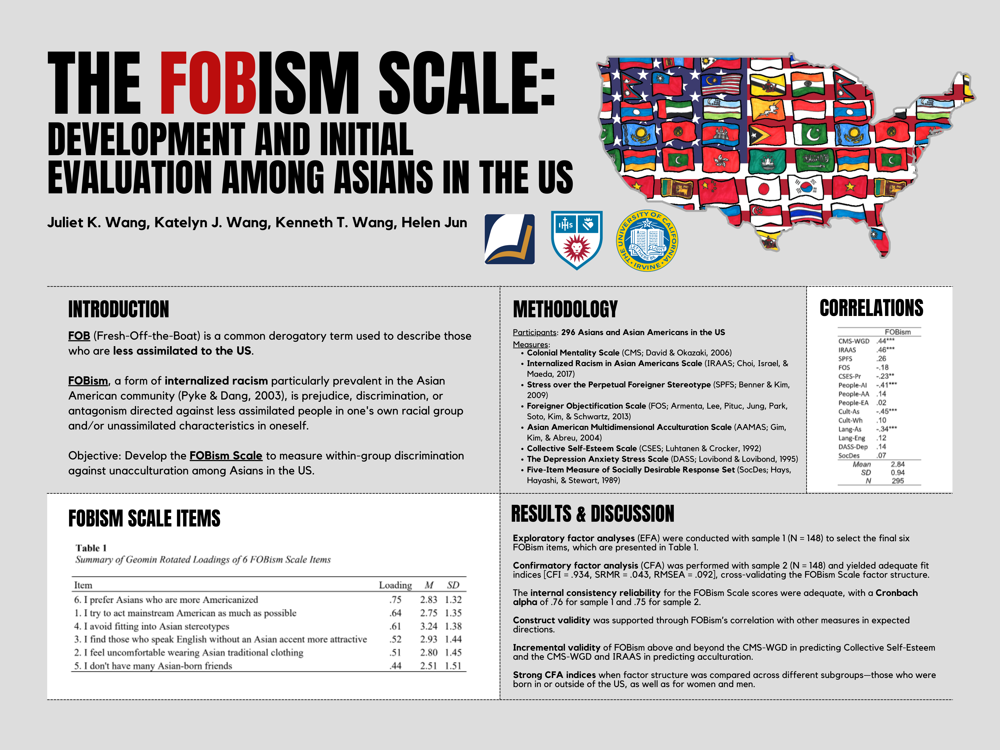

FOBism Research
The Imperfect Culture Lab, 2020-2022
Conducted research on FOBism, a form of internalized racism in the
Asian American community
- Conducted a literature review, developed scale items, co-authored a manuscript
- Presented at APA 2022

UCI Humanities Core 2021-2022
- Wrote a literary research paper on The Knife of Never Letting Go
analyzing aspects of gender, power, and colonialism
- Created a
presentation and documented the process on a
blog
Summer STEM Institute 2020
Data science research bootcamp
- Machine learning and data manipulation using Google Colab, Pandas,
NumPy, Kaggle
- Research proposal analyzing how increasing government funding to
social services would affect homelessness in the long run